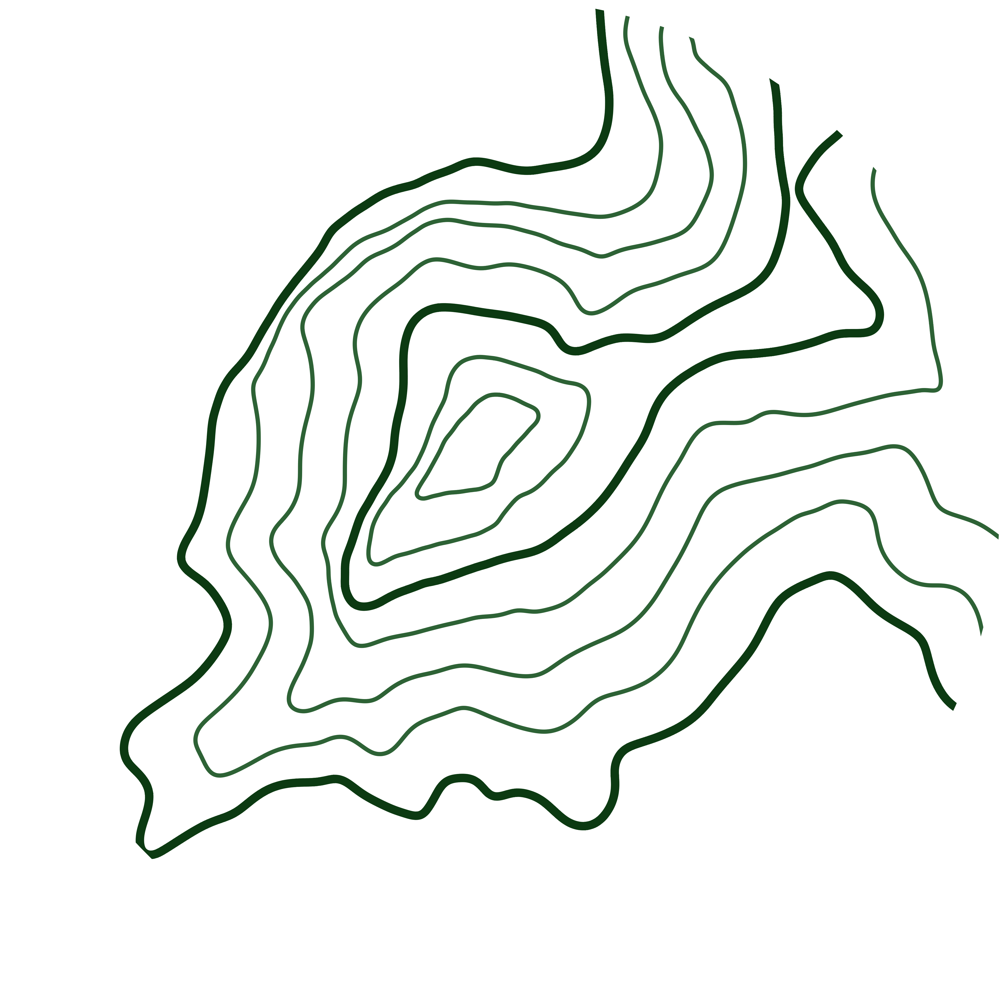

Vos cartes et reliefs, gravés en lignes.
Créez gratuitement des affiches topographiques, des plans de villes vectoriels ou des posters de vos sorties Strava (GPX). Export PNG jusqu'à 50 Mégapixels, SVG et PDF sans inscription.
Explorer les exemples
Gratuit · Sans compte · Sans filigrane

Exemples d'affiches
Quatre lieux. Exportés tels quels du studio.
Cartes urbaines en mode Routes & Fleuves ou reliefs alpins par courbes de niveau réelles. Cliquez pour zoomer ou recharger le lieu.
Courbes Topo · Minimal
La Dent de Crolles
Chartreuse, 2 062 m et sommets annotés. 3500 × 4950 px.
Ouvrir ce sommet →
Courbes Topo · Or & Blanc
La Pinéa
Lissage organique bronze sur fond ivoire. 2480 × 3508 px.
Ouvrir La Pinéa →
Courbes Topo · Bleu Nuit
L'Alpe d'Huez
Grandes Rousses jusqu'au Pic Blanc 3 382 m. 50 Mpx.
Ouvrir l'Alpe d'Huez →
Fonctionnement
Simple à cadrer. Précis à l'export.
Cadrez ou importez un GPX
Recherchez une ville, un sommet ou téléversez votre tracé GPX Strava : la carte se cadre automatiquement sur votre parcours.
Choisissez le moteur
Courbes de niveau réelles (Marching Squares), dalles IGN de randonnée avec votre itinéraire ou réseau Routes & Fleuves vectoriel.
Composez & exportez
12 palettes dont le mode Alpha sans fond, personnalisation du tracé GPX et export instantané en PNG (50 Mpx), SVG vectoriel ou PDF.
Tracés Strava GPX
Superposition sur courbes topo & cartes IGN
PNG 50 Mpx
Jusqu'à 5950×8420 px ou 10800×4628 px
SVG Vectoriel
Calques séparés pour Illustrator & CNC
0 € · Client-side
Aucune inscription ni serveur tiers requis
Questions fréquentes
L'essentiel en quelques réponses.
Le studio est-il vraiment gratuit et sans inscription ?
Oui. Tout fonctionne directement dans votre navigateur sans compte, sans filigrane et sans clé API obligatoire.
D'où viennent les courbes de niveau et les tracés urbains ?
Les altitudes proviennent de modèles numériques de terrain (Terrain-RGB / AWS Terrarium). Le mode Routes & Fleuves décode les tuiles vectorielles OpenFreeMap issues d'OpenStreetMap, et les dalles raster s'appuient sur l'IGN Géoplateforme et OpenTopoMap.
Peut-on imprimer en grand format ou éditer dans Illustrator ?
Oui : exportez en PNG jusqu'à 50 Mégapixels pour l'impression grand format, en PDF haute définition, ou en SVG vectoriel pur avec calques séparés.
Comment créer une affiche avec un itinéraire Strava (GPX) ?
Dans le studio, cliquez sur « Téléverser un tracé GPX (Strava) » pour importer votre sortie. La carte se cale sur le parcours avec sa distance et son dénivelé (D+), et le tracé s'ajoute sur les courbes topo, les cartes IGN de randonnée ou les plans urbains (PNG, SVG et PDF).
Comment obtenir des lignes topographiques sans fond comme le fond du site ?
Dans le studio, sélectionnez le format souhaité (par exemple Panorama), activez la palette Alpha (fond transparent) et la disposition Lignes Pures.
Atelier en ligne
Votre territoire, prêt à imprimer.
Ouvrez l'éditeur cartographique sur n'importe quel point du globe ou importez un itinéraire Strava pour générer votre tirage HD.

Skylense Studio
PNG 50 Mpx · SVG vectoriel · PDF Print